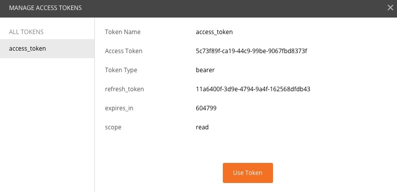
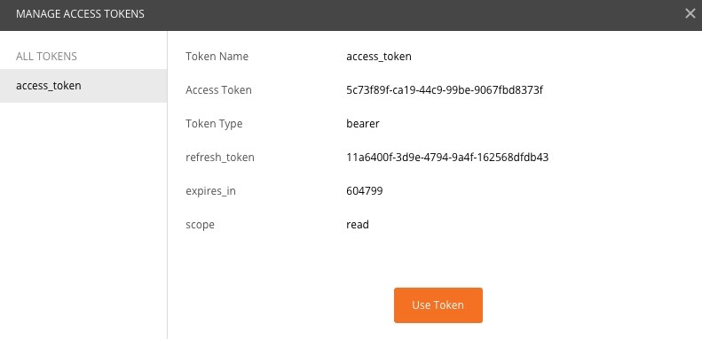

2.在新窗口中填入各个选项，点击request token</br>

3.输入在我方平台已经注册的手机号密码，点击登录</br>
 </br>
</br>
4.跳转到授权确认页面，点击授权</br>

5.跳转到显示token页面，授权过程结束</br>
授权部分采用业界主流的oauth2协议授权码模式，具体概念介绍可以参考oauth2介绍
下面以postman为例，介绍第三方对接我方授权平台的步骤。
1.选择postman的Authorization的选项，type选择Oauth 2.0,点击Get New Access Token</br>
2.在新窗口中填入各个选项，点击request token</br>
3.输入在我方平台已经注册的手机号密码，点击登录</br></br>
4.跳转到授权确认页面，点击授权</br>
5.跳转到显示token页面，授权过程结束</br>
授权成功后，第三方平台可以根据用户的token获取用户的基本信息，比如open_id,头像，昵称等。